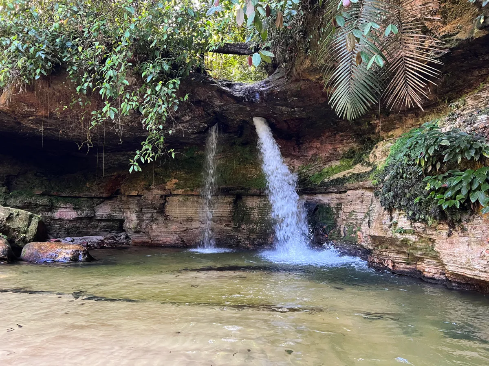
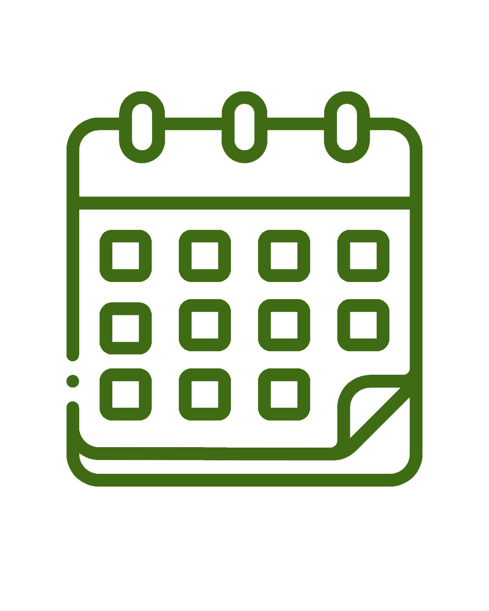
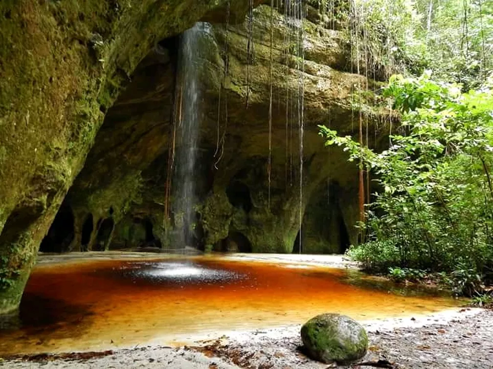
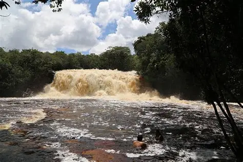
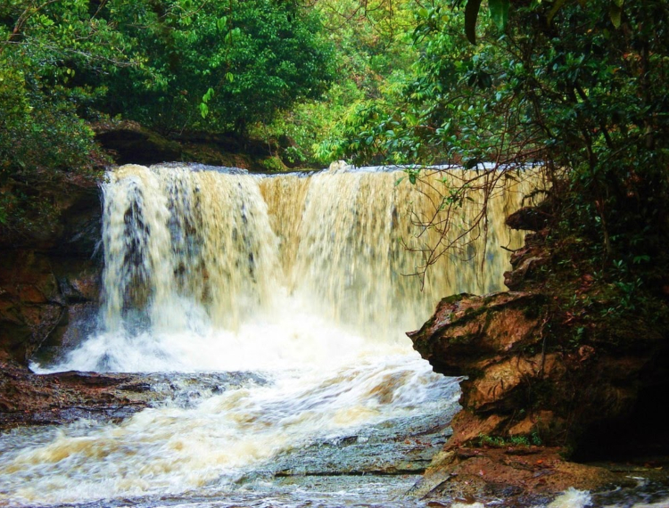
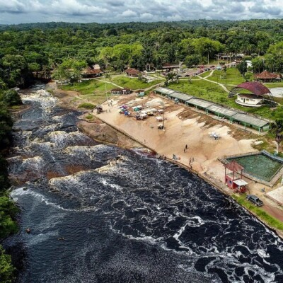
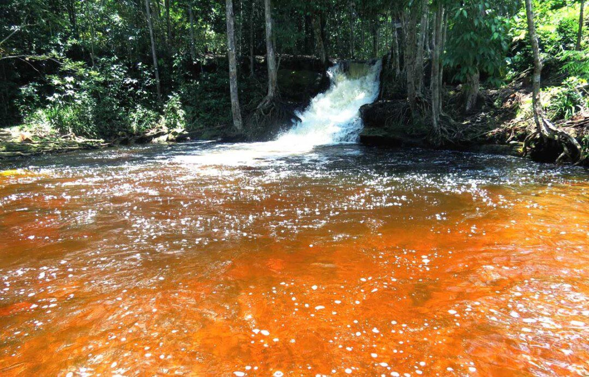

Cachoeira da PedraFurada
Cachoeira da Pedra Furada:
Valor da Entrada: R$10,00 por pessoa.
Localização: Km 57, AM 240, estrada de Balbina, Presidente Figueiredo






Cachoeira da PedraCachoeira da Pedra Furada:
Valor da Entrada: R$10,00 por pessoa.
Localização: Km 57, AM 240, estrada de Balbina, Presidente Figueiredo

Caverna RefúgioCaverna Refúgio Maroaga:
Valor da Entrada é cobrado por guia: Varia entre R$100,00 a R$120,00 por grupo de até 5 pessoas
Localização: Km 05, AM 240, estrada de Balbina, Presidente Figueiredo

Cachoeira de IracemaCachoeira de Iracema:
Valor da Entrada: R$25,00 por pessoa, inclui acesso ao Circuito Iracema Falls
Localização: BR 174, km 998. Aproximadamente 8km da cidade de Presidente Figuqiredo, sentido Boa Vista.
 Cachoeira do Mutum
Cachoeira do Mutum
Cachoeira do Mutum:
Valor da Entrada: R$15,00 a R$25,00 por pessoa, dependendo da temporada
Localização: AM 240, km 54, estrada de Balbina, Presidente Figueiredo

Cachoeira das ArarasCachoeira das Araras:
Valor da Entrada: R$25,00 por pessoa, inclui acesso ao Circuito Iracema Falls
Localização: BR 174, km 998. Aproximadamente 8km da cidade de Presidente Figuqiredo, sentido Boa Vista.
 Cachoeira da Neblina
Cachoeira da Neblina
Cachoeira da Neblina:
Valor da Entrada: R$10,00 por pessoa.
Trilha de 6km é recomendável Guia local, os valores variam entre R$130,00 a R$150,00 por grupo de até 5 pessoas.
Localização: km 51, AM 240, estrada de Balbina.
 Cachoeira da Porteira
Cachoeira da Porteira
Cachoeira da Porteira:
Valor da Entrada: R$15,00 por pessoa.
Localização: Km 13, AM 240, em frente a Com. Marcos Freire
 Cachoeira da Asframa
Cachoeira da Asframa
Cachoeira da Asframa:
Valor da Entrada:
Varia entre R$10,00 a R$15,00 por pessoa.
R$20,00 a R$30,00 por veículo.
Localização: BR 174, Km 96(sentido Manaus-Pres.Figueiredo)
 Cachoeira dos Pássaros
Cachoeira dos Pássaros
Cachoeira dos Pássaros:
Valor da Entrada: R$15,00 por pessoa.
Localização: Km 13, AM 240, cerca de 3km de ramal, a margem esquerda.
 Cachoeira das Lages
Cachoeira das Lages
Cachoeira das Lages:
Valor da Entrada: Varia entre R$10,00 A R$15,00 reais por pessoa, dependendo da temporada
Localização: BR 174, aproximadamente a 05 Km da cidade de Presidente Figueiredo, sentido Boa Vista.
 Cachoeira Natal
Cachoeira Natal
Cachoeira Natal:
Valor da Entrada: Varia entre R$20,00 a R$25,00 reais por pessoa
Localização: Ramal do Urubuí (Ramal do Cuado), no Km 7 - Presidente Figueiredo
 Cachoeira do Éden
Cachoeira do Éden
Cachoeira do Éden:
Valor da Entrada: R$20,00 por pessoa
Localização: km 13, AM 240, Ramal da Com. Marcos Freire, 3 km.
 Lagoa Cristalina
Lagoa Cristalina
Lagoa Cristalina:
Valor da Entrada: R$15,00 por pessoa, a visita dura cerca de 20 minutos.
Localização: BR 174, Km 112, sentido Manaus - Boa Vista.

Corredeira do UrubuíCorredeira do Urubuí:
Parque Gratuito
Localização: Área urbana da Cidade de Presidente Figueiredo
Próximo ao Hospital

Cachoeira das OrquídeasCachoeira das Orquídeas:
Acesso Gratuito, possui trilha de 2 km.
Localização: Entre o bairro Galo da Serra I e II
Ao lado da Praça da Juventude.